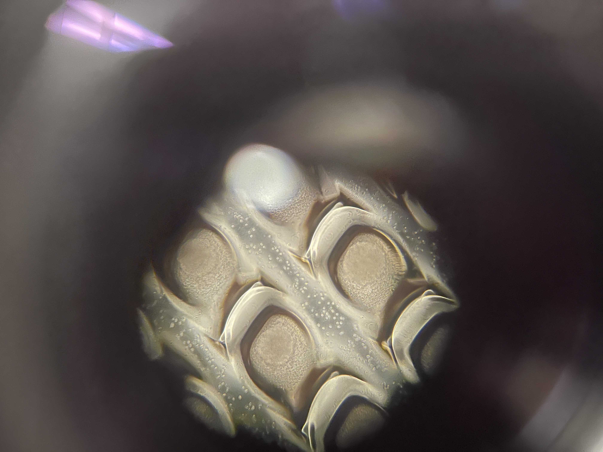
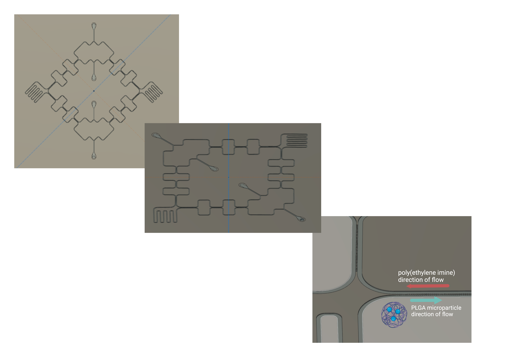
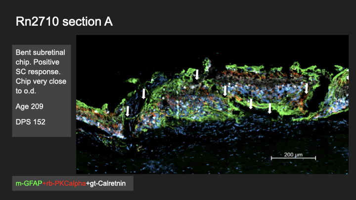
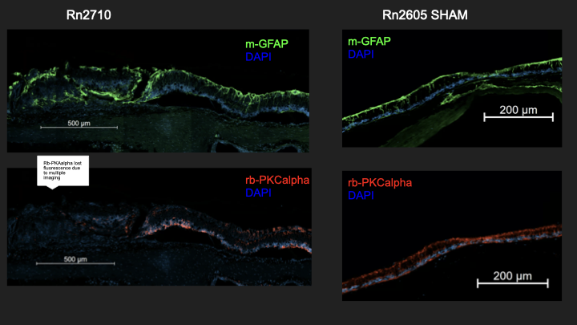

Two years of wet lab work across four parallel tracks, growing retinal organoids from stem cells, designing a microfluidic chip for double emulsion encapsulation, developing a tissue clearing protocol, and characterizing the cellular response to subretinally implanted photovoltaic chips. The unifying question: how do we build and interface with retinal tissue in ways that last?
Cultivated retinal organoids from embryonic pluripotent stem cells (EPSCs), guiding differentiation through a staged protocol toward retinal progenitor and photoreceptor cell fates. The work involved maintaining organoid sheets in culture, optimizing media formulations and timing for each differentiation stage, and characterizing the resulting tissue by morphology and marker expression. The goal was to produce tissue that could serve as a testbed for implant interaction studies and eventually as transplantable material for degenerative retinal disease.

The exisiting protocol for encapsulating growth factors in PLGA nanoparticles (NPs), critical for promoting tissue adherence and integration post-surgery, relied entirely on vortexing, whcih produces NPs with highly variable size distributions. I designed a microfluidic chip to generate double emulsion droplets with more controlled size and uniformity, which should yield more consistent NP characteristics. The design process involved CAD modeling of the microfluidic channels, fabrication using soft lithography, and testing with fluorescent dyes to optimize flow rates and droplet formation before moving on to actual NP synthesis. In a double emulsion geometry, an inner aqueous phase (containing the growth factor payload) is first emulsified into an oil phase at one junction, then that droplet is encapsulated into an outer aqueous phase at a second junction — producing a core-shell structure. Because droplet size is governed by channel geometry and flow rate ratios rather than mechanical agitation, the result is monodisperse particles with size you can actually tune by adjusting flow rates. The chip design went through multiple iterations to stabilize droplet formation at both junctions and prevent coalescence downstream.

Worked on establishing a tissue clearing protocol to render retinal and organoid tissue optically transparent for volumetric imaging. Tissue clearing removes lipids that scatter light, allowing fluorescence imaging of intact 3D tissue without physical sectioning — which preserves spatial relationships that serial sections destroy. The challenge is balancing clearing efficiency against signal preservation: aggressive clearing can wash out fluorescent labels or deform tissue. Protocol development involved testing clearing agents, incubation conditions, and refractive index matching solutions, evaluating each iteration against both transparency and antibody staining retention.
Investigated cellular and tissue-level responses to photovoltaic chips implanted in the subretinal space of a rat model, across multiple surgeries and days post-surgery (DPS 146–152). Sections were stained for GFAP (glial reactivity), PKCalpha (bipolar cell integrity), and Calretinin (amacrine and horizontal cells), then compared against sham-operated controls. Chip geometry — particularly bending and proximity to the optic disc — correlated with where Schwann cell infiltration appeared, suggesting that mechanical placement precision is a biocompatibility variable, not just an engineering one.

